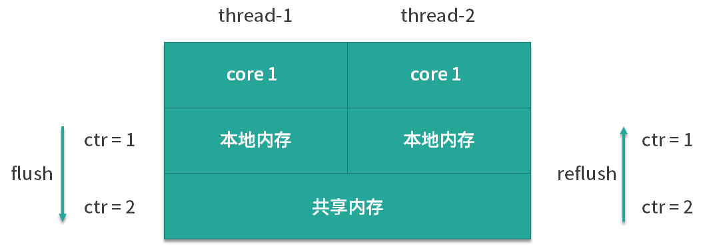

- 00 由点及面，搭建你的 Java 并发知识网.md
- 01 为何说只有 1 种实现线程的方法？.md
- 02 如何正确停止线程？为什么 volatile 标记位的停止方法是错误的？.md
- 03 线程是如何在 6 种状态之间转换的？.md
- 04 waitnotifynotifyAll 方法的使用注意事项？.md
- 05 有哪几种实现生产者消费者模式的方法？.md
- 06 一共有哪 3 类线程安全问题？.md
- 07 哪些场景需要额外注意线程安全问题？.md
- 08 为什么多线程会带来性能问题？.md
- 09 使用线程池比手动创建线程好在哪里？.md
- 10 线程池的各个参数的含义？.md
- 11 线程池有哪 4 种拒绝策略？.md
- 12 有哪 6 种常见的线程池？什么是 Java8 的 ForkJoinPool？.md
- 13 线程池常用的阻塞队列有哪些？.md
- 14 为什么不应该自动创建线程池？.md
- 15 合适的线程数量是多少？CPU 核心数和线程数的关系？.md
- 16 如何根据实际需要，定制自己的线程池？.md
- 17 如何正确关闭线程池？shutdown 和 shutdownNow 的区别？.md
- 18 线程池实现“线程复用”的原理？.md
- 19 你知道哪几种锁？分别有什么特点？.md
- 20 悲观锁和乐观锁的本质是什么？.md
- 21 如何看到 synchronized 背后的“monitor 锁”？.md
- 22 synchronized 和 Lock 孰优孰劣，如何选择？.md
- 23 Lock 有哪几个常用方法？分别有什么用？.md
- 24 讲一讲公平锁和非公平锁，为什么要“非公平”？.md
- 25 读写锁 ReadWriteLock 获取锁有哪些规则？.md
- 26 读锁应该插队吗？什么是读写锁的升降级？.md
- 27 什么是自旋锁？自旋的好处和后果是什么呢？.md
- 28 JVM 对锁进行了哪些优化？.md
- 29 HashMap 为什么是线程不安全的？.md
- 30 ConcurrentHashMap 在 Java7 和 8 有何不同？.md
- 31 为什么 Map 桶中超过 8 个才转为红黑树？.md
- 32 同样是线程安全，ConcurrentHashMap 和 Hashtable 的区别.md
- 33 CopyOnWriteArrayList 有什么特点？.md
- 34 什么是阻塞队列？.md
- 35 阻塞队列包含哪些常用的方法？add、offer、put 等方法的区别？.md
- 36 有哪几种常见的阻塞队列？.md
- 37 阻塞和非阻塞队列的并发安全原理是什么？.md
- 38 如何选择适合自己的阻塞队列？.md
- 39 原子类是如何利用 CAS 保证线程安全的？.md
- 40 AtomicInteger 在高并发下性能不好，如何解决？为什么？.md
- 41 原子类和 volatile 有什么异同？.md
- 42 AtomicInteger 和 synchronized 的异同点？.md
- 43 Java 8 中 Adder 和 Accumulator 有什么区别？.md
- 44 ThreadLocal 适合用在哪些实际生产的场景中？.md
- 45 ThreadLocal 是用来解决共享资源的多线程访问的问题吗？.md
- 46 多个 ThreadLocal 在 Thread 中的 threadlocals 里是怎么存储的？.md
- 47 内存泄漏——为何每次用完 ThreadLocal 都要调用 remove()？.md
- 48 Callable 和 Runnable 的不同？.md
- 49 Future 的主要功能是什么？.md
- 50 使用 Future 有哪些注意点？Future 产生新的线程了吗？.md
- 51 如何利用 CompletableFuture 实现“旅游平台”问题？.md
- 52 信号量能被 FixedThreadPool 替代吗？.md
- 53 CountDownLatch 是如何安排线程执行顺序的？.md
- 54 CyclicBarrier 和 CountdownLatch 有什么异同？.md
- 55 Condition、object.wait() 和 notify() 的关系？.md
- 56 讲一讲什么是 Java 内存模型？.md
- 57 什么是指令重排序？为什么要重排序？.md
- 58 Java 中的原子操作有哪些注意事项？.md
- 59 什么是“内存可见性”问题？.md
- 60 主内存和工作内存的关系？.md
- 61 什么是 happens-before 规则？.md
- 62 volatile 的作用是什么？与 synchronized 有什么异同？.md
- 63 单例模式的双重检查锁模式为什么必须加 volatile？.md
- 64 你知道什么是 CAS 吗？.md
- 65 CAS 和乐观锁的关系，什么时候会用到 CAS？.md
- 66 CAS 有什么缺点？.md
- 67 如何写一个必然死锁的例子？.md
- 68 发生死锁必须满足哪 4 个条件？.md
- 69 如何用命令行和代码定位死锁？.md
- 70 有哪些解决死锁问题的策略？.md
- 71 讲一讲经典的哲学家就餐问题.md
- 72 final 的三种用法是什么？.md
- 73 为什么加了 final 却依然无法拥有“不变性”？.md
- 74 为什么 String 被设计为是不可变的？.md
- 75 为什么需要 AQS？AQS 的作用和重要性是什么？.md
- 76 AQS 的内部原理是什么样的？.md
- 77 AQS 在 CountDownLatch 等类中的应用原理是什么？.md
- 78 一份独家的 Java 并发工具图谱.md
40 AtomicInteger 在高并发下性能不好，如何解决？为什么？
本课时我们主要讲解 AtomicInteger 在高并发下性能不好，如何解决？以及为什么会出现这种情况？
我们知道在 JDK1.5 中新增了并发情况下使用的 Integer/Long 所对应的原子类 AtomicInteger 和 AtomicLong。
在并发的场景下，如果我们需要实现计数器，可以利用 AtomicInteger 和 AtomicLong，这样一来，就可以避免加锁和复杂的代码逻辑，有了它们之后，我们只需要执行对应的封装好的方法，例如对这两个变量进行原子的增操作或原子的减操作，就可以满足大部分业务场景的需求。
不过，虽然它们很好用，但是如果你的业务场景是并发量很大的，那么你也会发现，这两个原子类实际上会有较大的性能问题，这是为什么呢？就让我们从一个例子看起。
AtomicLong 存在的问题
首先我们来看一段代码：
/**
* 描述： 在16个线程下使用AtomicLong
*/
public class AtomicLongDemo {
public static void main(String[] args) throws InterruptedException {
AtomicLong counter = new AtomicLong(0);
ExecutorService service = Executors.newFixedThreadPool(16);
for (int i = 0; i < 100; i++) {
service.submit(new Task(counter));
}
Thread.sleep(2000);
System.out.println(counter.get());
}
static class Task implements Runnable {
private final AtomicLong counter;
public Task(AtomicLong counter) {
this.counter = counter;
}
@Override
public void run() {
counter.incrementAndGet();
}
}
}
在这段代码中可以看出，我们新建了一个原始值为 0 的 AtomicLong。然后，有一个线程数为 16 的线程池，并且往这个线程池中添加了 100 次相同的一个任务。
那我们往下看这个任务是什么。在下面的 Task 类中可以看到，这个任务实际上就是每一次去调用 AtomicLong 的 incrementAndGet 方法，相当于一次自加操作。这样一来，整个类的作用就是把这个原子类从 0 开始，添加 100 个任务，每个任务自加一次。
这段代码的运行结果毫无疑问是 100，虽然是多线程并发访问，但是 AtomicLong 依然可以保证 incrementAndGet 操作的原子性，所以不会发生线程安全问题。
不过如果我们深入一步去看内部情景的话，你可能会感到意外。我们把模型简化成只有两个线程在同时工作的并发场景，因为两个线程和更多个线程本质上是一样的。如图所示：

我们可以看到在这个图中，每一个线程是运行在自己的 core 中的，并且它们都有一个本地内存是自己独用的。在本地内存下方，有两个 CPU 核心共用的共享内存。
对于 AtomicLong 内部的 value 属性而言，也就是保存当前 AtomicLong 数值的属性，它是被 volatile 修饰的，所以它需要保证自身可见性。
这样一来，每一次它的数值有变化的时候，它都需要进行 flush 和 refresh。比如说，如果开始时，ctr 的数值为 0 的话，那么如图所示，一旦 core 1 把它改成 1 的话，它首先会在左侧把这个 1 的最新结果给 flush 到下方的共享内存。然后，再到右侧去往上 refresh 到核心 2 的本地内存。这样一来，对于核心 2 而言，它才能感知到这次变化。
由于竞争很激烈，这样的 flush 和 refresh 操作耗费了很多资源，而且 CAS 也会经常失败。
LongAdder 带来的改进和原理
在 JDK 8 中又新增了 LongAdder 这个类，这是一个针对 Long 类型的操作工具类。那么既然已经有了 AtomicLong，为何又要新增 LongAdder 这么一个类呢？
我们同样是用一个例子来说明。下面这个例子和刚才的例子很相似，只不过我们把工具类从 AtomicLong 变成了 LongAdder。其他的不同之处还在于最终打印结果的时候，调用的方法从原来的 get 变成了现在的 sum 方法。而其他的逻辑都一样。
我们来看一下使用 LongAdder 的代码示例：
/**
* 描述： 在16个线程下使用LongAdder
*/
public class LongAdderDemo {
public static void main(String[] args) throws InterruptedException {
LongAdder counter = new LongAdder();
ExecutorService service = Executors.newFixedThreadPool(16);
for (int i = 0; i < 100; i++) {
service.submit(new Task(counter));
}
Thread.sleep(2000);
System.out.println(counter.sum());
}
static class Task implements Runnable {
private final LongAdder counter;
public Task(LongAdder counter) {
this.counter = counter;
}
@Override
public void run() {
counter.increment();
}
}
}
代码的运行结果同样是 100，但是运行速度比刚才 AtomicLong 的实现要快。下面我们解释一下，为什么高并发下 LongAdder 比 AtomicLong 效率更高。
因为 LongAdder 引入了分段累加的概念，内部一共有两个参数参与计数：第一个叫作 base，它是一个变量，第二个是 Cell[] ，是一个数组。
其中的 base 是用在竞争不激烈的情况下的，可以直接把累加结果改到 base 变量上。
那么，当竞争激烈的时候，就要用到我们的 Cell[] 数组了。一旦竞争激烈，各个线程会分散累加到自己所对应的那个 Cell[] 数组的某一个对象中，而不会大家共用同一个。
这样一来，LongAdder 会把不同线程对应到不同的 Cell 上进行修改，降低了冲突的概率，这是一种分段的理念，提高了并发性，这就和 Java 7 的 ConcurrentHashMap 的 16 个 Segment 的思想类似。
竞争激烈的时候，LongAdder 会通过计算出每个线程的 hash 值来给线程分配到不同的 Cell 上去，每个 Cell 相当于是一个独立的计数器，这样一来就不会和其他的计数器干扰，Cell 之间并不存在竞争关系，所以在自加的过程中，就大大减少了刚才的 flush 和 refresh，以及降低了冲突的概率，这就是为什么 LongAdder 的吞吐量比 AtomicLong 大的原因，本质是空间换时间，因为它有多个计数器同时在工作，所以占用的内存也要相对更大一些。
那么 LongAdder 最终是如何实现多线程计数的呢？答案就在最后一步的求和 sum 方法，执行 LongAdder.sum() 的时候，会把各个线程里的 Cell 累计求和，并加上 base，形成最终的总和。代码如下：
public long sum() {
Cell[] as = cells; Cell a;
long sum = base;
if (as != null) {
for (int i = 0; i < as.length; ++i) {
if ((a = as[i]) != null)
sum += a.value;
}
}
return sum;
}
在这个 sum 方法中可以看到，思路非常清晰。先取 base 的值，然后遍历所有 Cell，把每个 Cell 的值都加上去，形成最终的总和。由于在统计的时候并没有进行加锁操作，所以这里得出的 sum 不一定是完全准确的，因为有可能在计算 sum 的过程中 Cell 的值被修改了。
那么我们已经了解了，为什么 AtomicLong 或者说 AtomicInteger 它在高并发下性能不好，也同时看到了性能更好的 LongAdder。下面我们就分析一下，对它们应该如何选择。
如何选择
在低竞争的情况下，AtomicLong 和 LongAdder 这两个类具有相似的特征，吞吐量也是相似的，因为竞争不高。但是在竞争激烈的情况下，LongAdder 的预期吞吐量要高得多，经过试验，LongAdder 的吞吐量大约是 AtomicLong 的十倍，不过凡事总要付出代价，LongAdder 在保证高效的同时，也需要消耗更多的空间。
AtomicLong 可否被 LongAdder 替代？
那么我们就要考虑了，有了更高效的 LongAdder，那 AtomicLong 可否不使用了呢？是否凡是用到 AtomicLong 的地方，都可以用 LongAdder 替换掉呢？答案是不是的，这需要区分场景。
LongAdder 只提供了 add、increment 等简单的方法，适合的是统计求和计数的场景，场景比较单一，而 AtomicLong 还具有 compareAndSet 等高级方法，可以应对除了加减之外的更复杂的需要 CAS 的场景。
结论：如果我们的场景仅仅是需要用到加和减操作的话，那么可以直接使用更高效的 LongAdder，但如果我们需要利用 CAS 比如 compareAndSet 等操作的话，就需要使用 AtomicLong 来完成。
© 2019 - 2023 Liangliang Lee. Powered by gin and hexo-theme-book.